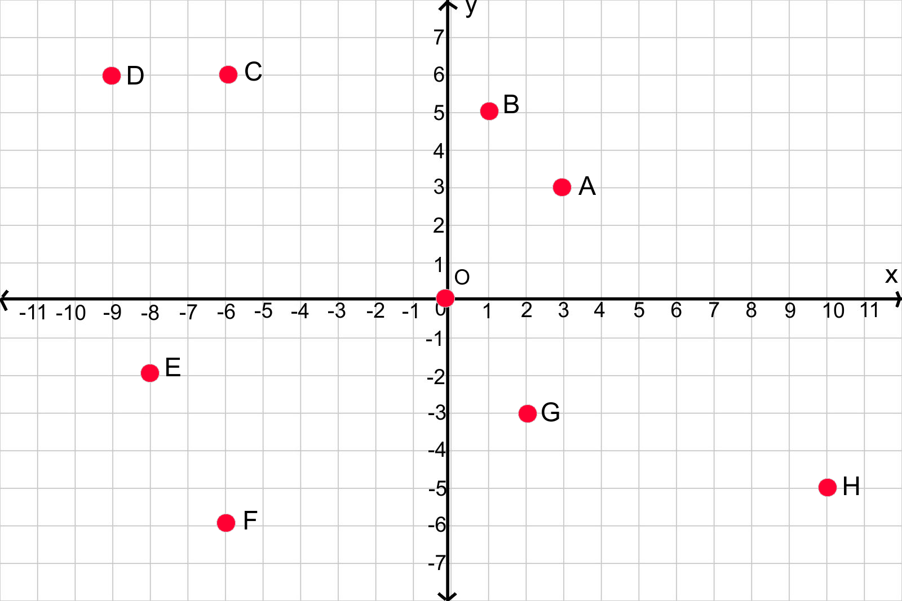

-
Tujuan Pembelajaran:
- Siswa dapat menentukan posisi titik terhadap garis sumbu-x dan sumbu-y pada bidang koordinat
- Siswa dapat menentukan posisi titik terhadap titik asal(0,0) pada bidang koordinat
- Siswa dapat menentukan posisi titik terhadap titik acuan(a,b) pada bidang koordinat
Setelah mengetahui bagaimana menentukan jarak titik terhadap titik awal, selanjutnya kita akan mempelajari bagaimana cara menentukan jarak titik terhadap titik acuan


Masalah 2.3 : Perhatikan gambar berikut ini!

Selain Pasar Sudimampir dan Pasar Lama, pasar tradisional yang terdapat di Banjarmasin yaitu Pasar Sungai Miai, Pasar Kalindo, Pasar Antasari dan Pasar Pandu. Jika pasar tradisional di Banjarmasin dijadikan sebagai titik pada bidang koordinat seperti gambar dibawah ini Jika pasar tradisional di Banjarmasin dijadikan sebagai titik pada bidang koordinat seperti gambar dibawah ini


Bagaimana caranya untuk menentukan posisi titik Pasar Lama, Pasar Pasirmas, Pasar Pekauman dan Pasar Cempaka terhadap titik asal(0,0)?

Dari gambar bidang koordinat Gambar 2.8 kita dapat menentukan:
- Posisi titik Pasar Kalindo terhadap titik acuan Pasar Sungai Miai,
- Posisi titik Pasar Antasari terhadap titik acuan Pasar Sungai Miai
- Posisi titik Pasar Pandu terhadap titik acuan Pasar Sungai Miai,
- Posisi titik Pasar Sungai Miai terhadap titik acuan Pasar Kalindo,
- Posisi titik Pasar Antasari terhadap titik acuan Pasar Kalindo,
- Posisi titik Pandu terhadap titik acuan Pasar Kalindo,

Untuk menyelesaikan permasalahan diatas, ikuti langkah-langkah berikut ini
= ((-6) – 8, 4 – 2)
= (-14,2)

untuk lebih jelasnya mari simak animasi berikut ini, klik tombol mulai untuk memulai animasi
- Klik tombol bendera hijau kemudian tekan mulai pada animasi dibawah ini untuk memulai.
- Jawab pertanyaan dengan masukkan jawaban pada kolom yang tersedia kemudian tekan enter

Perhatikan gambar berikut ini!
-
Petunjuk:
- Isikan jawaban anda pada kotak yang kosong.
- Tekan tombol cek untuk mengecek jawaban.
- Tekan tombol ulang untuk menghapus jawaban
- Tekan tombol 1,2,3,4,5,6,7,8,9 dibawah soal atau tekan tombol "<" dan ">" disamping soal untuk mengganti ke nomor selanjutnya